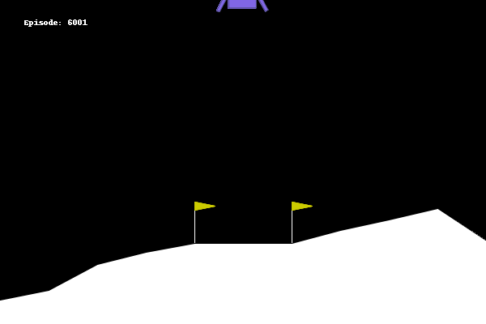
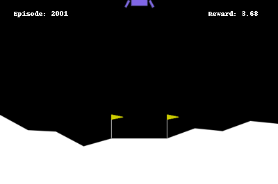
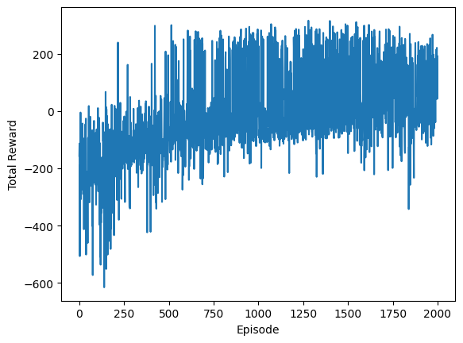
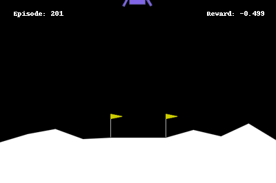
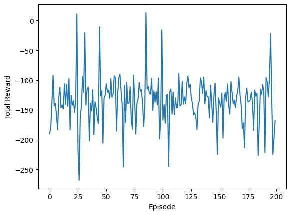
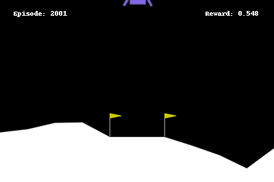

Cover image taken from
Summary: This is the 7th and final part of the Reinforcement Learning Series: Here I give a brief introduction to deep Q-learning and some techniques to increase RL agent’s efficiency
Hey everyone! In my last post about Reinforcement Learning (check here) we learned about techniques to deal with state spaces of infinite sizes, using the method of linear value approximation. We also solved the Mountain Car problem, and it turned out that adding a bit of nonlinearity like kernel based features helped a lot to train a better RL agent.
Remember that we learned about the interesting Lunar Lander environment1 before (see my post on Q-learning), where we were trying to train an agent to successfully land a moon rover on the surface of the moon. Here’s a picture to refresh your memory.

The goal of this is to train an agent to successfully land on the surface of the moon. It gets to observe state values as an 8-dimensional vector, constituting of its linear positions, linear velocities, angular velocities and many more. It simply has 4 actions to do as follows:
Before, we tried to train an agent to solve this with Q-learning technique, but that did not got us very far. We used sparse encoding to represent the 8-dimensional observation vector to a tabular grid. However, since we now know about the techniques to handle infinite state space, we might be able to do better.
We first try the technique exactly as we discussed before in this post. We consider $400$ different kernel based feature transformations of those $8$ variables that the state vector spits out, and then we try to have an weight vector associated with each of these actions. We take the inner product of the respective weight vector with these kernel features, and that becomes our Q-value for that particular action.
We solved the Mountain Car problem with this technique, in about $200$ episodes. Since this is a bit difficult problem compared to that, we allow the agent to train for about $2000$ episodes. Well, turns out it learned something useful, but still not decent enough.
Here’s a picture of the agent after $2000$ episodes (It takes about 20-25 minutes to completely run on a Google Colab notebook).

We also tracked the rewards over these episodes. If we look at the plot of the history of these rewards, it looks like this.

Turns out it is not learning after about $1000$ episodes, and it not getting better. Looks like we need something more powerful.
Well, if we look at the kernel transformed features from before, it was serving two purposes:
Mathematically, if we have the state vector $s = (x_1, x_2, \dots x_8)$, then the action value we were deriving as
$$ q(a_i) = w_{1,1}\phi_{1,1}(x_1) + \dots + w_{100,1}\phi_{100,1}(x_1) + w_{1,2}\phi_{1,2}(x_2) + \dots $$
So, what if instead of directly combining these transformed values into features, we try to combine these transformed values into another set of transformed values, and then may be another set of transformed values, and then another, and so on (you get the idea!) until you are satisfied, and then these whole bunch of these variables can come together to form the final opinion about the Q-value. Mathematically it will be like this.
$$ \begin{align*} h_{1} & = \phi_1(w_{1,1} x_{1} + w_{1,2}x_{2} + \dots + w_{1,8}x_{8}) \\ h_{2} & = \phi_1(w_{2,1} x_{1} + w_{2,2}x_{2} + \dots + w_{2,8}x_{8}) \\ \dots & \dots \\ h_{64} & = \phi_1(w_{64,1} x_{1} + w_{64,2}x_{2} + \dots + w_{64,8}x_{8}) \\ \end{align*} $$
and then,
$$ \begin{align*} g_{1} & = \phi_2(v_{1,1} h_{1} + v_{1,2}h_{2} + \dots + v_{1,64}h_{64}) \\ g_{2} & = \phi_2(v_{2,1} h_{1} + v_{2,2}h_{2} + \dots + v_{2,64}h_{64}) \\ \dots & \dots \\ g_{64} & = \phi_2(v_{64,1} h_{1} + v_{64,2}h_{2} + \dots + v_{64,64}h_{64})\\ \end{align*} $$
and so on, and finally,
$$ \begin{align*} q_{1} & = u_{1,1} g_{1} + u_{1,2}g_{2} + \dots + u_{1,64}g_{64}\\ \dots & \dots \\ q_{4} & = u_{4,1} g_{1} + u_{64,2}g_{2} + \dots + u_{8,64}g_{64}\\ \end{align*} $$
where all these $w, v$ and $u$s are weight parameters which will be changed as the agent learns more and more about the environment. The final output will be the Q-values of all the 4 actions. The functions $\phi_1$ and $\phi_2$ are adding the nonlinearities like the kernel. If you draw out the input output pairs of the above equations as connections, then it will look like as follows, a fully connected Network. (This gives you one part of the story, why Neural Network is a Network).
Another way to think about this network is analogus to human brain. Human brain is comprised of multiple layers of neurons, each neuron is like a connection you see above. Basically, it takes some inputs and performs a chemical reaction (read it as linear combination) and the reaction either activates the neuron and sends input to next layer, or the reaction may die down. McChulloch and Pitts were the first to introduce this idea of representing the neural activity by mathematical terms in 19432, and then Frank Rosenblatt implemented the same in 1958, and he named it Perceptron, a machine that does the perception. You may want to read more about it in its Wikipedia page3. This should now explain the other half of the name, why Neural Network is Neural.
Here, we will be using the tensorflow package (developed by Google) to implement this network of neurons.
import tensorflow as tf
def simple_nn_model():
x = tf.keras.Input(shape = (8, )) # these will be a layer where we pass the 8-dimension state
h1 = tf.keras.layers.Dense(64, activation = 'relu')(x) # their linear combination now creates 64 new features, and adds a nonlinearity by using RELU function
h2 = tf.keras.layers.Dense(64, activation = 'relu')(h1) # now the previous layer's output gets linearly combined
out = tf.keras.layers.Dense(4)(h2) # finally, we combine these hidden variables into 4 Q-values for 4 actions
return tf.keras.Model(inputs = x, outputs = out) # finally we join them together and make a neural network model
While our network is pretty simple, sometimes it can be very complicated. Tensorflow models has a nice summary function that we can use to extract relevant information from a model.
model = simple_nn_model()
model.summary()
Model: "model"
_________________________________________________________________
Layer (type) Output Shape Param #
=================================================================
input_1 (InputLayer) [(None, 8)] 0
dense_1 (Dense) (None, 64) 576
dense_2 (Dense) (None, 64) 4160
dense_3 (Dense) (None, 4) 260
=================================================================
Total params: 4996 (19.52 KB)
Trainable params: 4996 (19.52 KB)
Non-trainable params: 0 (0.00 Byte)
The weights of the above network is randomly initialized, usually from a standard normal distribution. Let’s now see how we can use this network to obtain the Q-values for an arbitrary state from the Lunar Lander environment.
state = env.observation_space.sample() # we sample one observation
x = model(tf.convert_to_tensor([state])) # run the model on it,
print(x)
tf.Tensor([[-0.6147699 -0.8249271 5.23029 0.7746165]], shape=(1, 4), dtype=float32)
One particular thing to notice here is that we are passing [state] to the model instead of simply state variable. This is because the neural networks provided in tensorflow are usually designed to work on a batch of inputs, instead of a single input, so it expects the first dimension of any variable to always represent the batch. Here, making a list out of state variable ensures we pass a 2-dimensional tensor to the model with batch dimension as $1$.
Next, in order to train the RL agent, we need to perform gradient descent to minimize the squared loss between the current value and the target value (which is either TD target, or Q-learning target or SARSA target). For linear value approximation, computing the gradient was easy. However, in case of a neural network, you need a bit more use of Chain rule of derivatives to calculate the gradient. Fortunately, we don’t have to do that manually, tensorflow is nice enough to provide an automatic gradient calculator, called tf.GradientTape(). It is a python execution context which tracks down all operations done within the context, and then provides a gradient value through tf.GradientTape().gradient() function.
observation, info = env.reset()
with tf.GradientTape() as t:
action_probs = model(tf.convert_to_tensor([observation]))
new_observation, reward, terminated, truncated, info = env.step(action) # Do the action in the environment
new_action_probs = model(tf.convert_to_tensor([new_observation]))
target = reward + DISCOUNT_FACTOR * tf.math.reduce_max(new_action_probs) # create the target
loss = (target - tf.math.reduce_max(action_probs))**2 # this is the squared error loss
grad = t.gradient(loss, model.trainable_variables) # Calculate gradients with respect to every trainable variable
# finally, we print the gradients
for var, g in zip(model.trainable_variables, grad):
print(f'{var.name}, shape: {g.shape}')
dense_6/kernel:0, shape: (8, 64)
dense_6/bias:0, shape: (64,)
dense_7/kernel:0, shape: (64, 64)
dense_7/bias:0, shape: (64,)
dense_8/kernel:0, shape: (64, 4)
dense_8/bias:0, shape: (4,)
Now we need to modify the weights of the neural network and reduce them by the learning rate times the appropriate gradient. To do that, we can set up an optimizer in tensorflow, and apply a single step of the optimizer, instead of directly modifying the model variable and its weights.
optimizer = tf.keras.optimizers.SGD(learning_rate=1e-3) # Instantiate an optimizer
# Run one step of gradient descent by updating the value of the variables to minimize the loss.
optimizer.apply_gradients(zip(grad, model.trainable_weights))
So far, we know how to create a neural network model and how to update the model parameters to reduce the loss function. Therefore, training the RL agent simply requires us to specify the target in each step of each episode, and then taking one step towards making the model better by applying the gradient descent rule.
Here’s how the entire code would have looked like:
N_EPISODE = 200
EPSILON = 0.1 # 10% of the time it would explore
DISCOUNT_FACTOR = 1.0
LR = 1e-3 # learning rate
optimizer = tf.keras.optimizers.SGD(learning_rate=LR) # Instantiate an optimizer
episode_rewards = np.zeros(N_EPISODE)
for ep in tqdm(range(N_EPISODE)):
# loop through the environment
observation, info = env.reset()
while True:
with tf.GradientTape() as t:
action_probs = model(tf.convert_to_tensor([observation]))
action = np.argmax(action_probs.numpy()[0])
if np.random.random() < EPSILON:
action = env.action_space.sample() # randomly do an action for exploration
new_observation, reward, terminated, truncated, info = env.step(action) # Do the action in the environment
new_action_probs = model(tf.convert_to_tensor([new_observation]))
target = reward + DISCOUNT_FACTOR * tf.math.reduce_max(new_action_probs) # create the target
loss = (target - action_probs.numpy()[0][action])**2 # this is the squared error loss
grad = t.gradient(loss, model.trainable_variables) # Calculate gradients with respect to every trainable variable
# Run one step of gradient descent by updating the value of the variables to minimize the loss.
optimizer.apply_gradients(zip(grad, model.trainable_weights))
episode_rewards[ep] += reward # update the reward
if terminated or truncated:
break
observation = new_observation # update the observation
We train for 200 episodes first to see what’s happenning. It takes about 10 minutes in the same Google Colab notebook.

Well, turns out it is always taking the action of doing nothing. The history of rewards tells us that the rewards obtained in the episodes are wildly varying, but on average, it has learned almost nothing.

We had our hopes up with this better model, but let’s try to investigate what’s causing this issue.
There are basically two things that went wrong while training the neural network based RL agent.
Turns out since neural network is a bit complicated compared to the linear value approximation, so it requires much more amount of data to effectively train.
In linear value approximation, we could selectively update weights associated with the Q-value estimation for a specific action, hence all the weights were not being updated.
We can have separately $4$ different neural networks, one for each action. Then we can selectively update a single neural network for that single action. However, we would want some hidden layer features to be common across all these networks (some features which are important for knowing may be whether to fire some engine or not, and is shared between multiple actions). This is not possible if we use multiple neural network.
Another problem with this approach is that it does not scale. For instance, if you have $100$ possible actions, you would need $100$ different networks.
Experience Replay is one way to address the first concern. Basically it tells to store some state, action, reward tuples in a buffer, and when the model needs to update its parameter, it can consume a batch of these tuples from the buffer and train on it. The buffer has a fixed size. When it overflows the buffer, we simply remove the oldest entries from the buffer to keep its size in check.
This method is called Experience Replay because it allows the RL agent to replay some of its stored experiences and keep learning from it over and over. This means, even when the agent is not interacting with the actual environment, it can still keep learning from its past experiences.
Here is how we can implement an experience replay buffer using python classes.
import random
class ReplayBuffer():
def __init__(self, size = 10_000):
self.size = size
self.transitions = [] # each transition is tuple of (old_state, action, reward, new_state, done)
We need two methods in this class. One for adding a new transition to the buffer.
def add(self, transition):
self.transitions.append(transition) # append the transition to the last
if len(self.transitions) > self.size:
self.transitions = self.transitions[:self.size] # buffer is overflowing, so slice it
Another is to get a batch of transactions for the RL agent to train on.
def get_batch(self, batch_size):
return random.choices(self.transitions, k = batch_size)
To solve the second concern, instead of having one neural network for each action, we will consider only two copies of the same neural network. One of them will be evaluating the Q-values by keeping its weights fixed for multiple iterations, and another will be updating the weights to find the optimal policy.
Mathematically, it is like having two sets of weights $w_1$ and $w_2$. Let us denote the neural network by $Q$, so
$$ \Delta w_1 = \alpha \nabla (R_t + \gamma Q(w_2; S_{t+1}) - Q(w_1; S_{t}) )^2 $$
where $\alpha$ and $\gamma$ are the learning rate and discount factor respectively. Here, we keep updating the weights $w_1$ without updating the weights $w_2$ for several steps. After a fixed number of steps, we finally update $w_2$ by the current value of the weights $w_1$. This means the target $R_t + \gamma Q(w_2; S_{t+1})$ remains static for several steps, creating a more stable target for the neural network for achieve. This diminishes the chance of having wildly varying rewards function as the number of episodes progresses. This $Q(w_2; )$ is often called as the evaluation network or the target model.
We first make a function that produces the tensorflow neural network model. In addition to that, we also specify a custom loss function that takes the true Q-values (i.e., as obtained by the TD-target) and the predicted Q-values produced by the current neural network, and produces the sqaured difference of their maximums. This is exactly what you would get as an error for the Q-learning method.
# the custom loss function to use
def custom_loss_fn(q_true, q_pred):
q_true_action = tf.math.reduce_max(q_true, axis = 1)
q_pred_action = tf.math.reduce_max(q_pred, axis = 1)
return tf.reduce_sum((q_true_action - q_pred_action)**2)
#
# the neural network model
def simple_nn_model(LR):
x = tf.keras.Input(shape = (8, ))
h1 = tf.keras.layers.Dense(64, activation = 'relu')(x)
h2 = tf.keras.layers.Dense(64, activation = 'relu')(h1)
out = tf.keras.layers.Dense(4, activation = 'linear')(h2)
model = tf.keras.Model(inputs = x, outputs = out)
optimizer = tf.keras.optimizers.Adam(learning_rate=LR)
model.compile(optimizer=optimizer, loss=custom_loss_fn) # makes easier to train
return model
The last two lines is a bit new, they are preparing the network network model to reduce that loss function. This compilation step has no outside impact, but the model training (i.e., the gradient descent) becomes much more efficient and faster to do.
Now we get an evaluation model, which is a copy of the current neural network, we can use the following function, which creates a blank model using the above function and then copies the weights from the current model to the blank model.
def copy_model(model, LR):
model2 = simple_nn_model_with_regularizer(LR) # used only for evaluation, so LR does not matter
model2.set_weights(model.get_weights())
return model2
One particular thing you might be thinking is that why we did not simply do
model2 = model
The reason is that in such a case, model2 simply refers to a pointer to the original variable model that holds the neural network, it does not create an independent copy. Hence, if we perform gradient descent on the first neural network model, the weights of model2 also will keep changing, but we do not want that.
So, we combine all of these ideas and put them together in action. Before that, we define as few utility functions which will be reused.
# get the q-values for the current state, based on the model
def get_q_values(model, state):
return model.predict([state])[0]
# selects the best action but with epsilon-greedy nature
def select_action_epsilon_greedy(q_values, epsilon):
if np.random.random() < epsilon:
return env.action_space.sample()
else:
return np.argmax(q_values)
We also provide another function that uses the evaluation network and a batch of state transitions from the replay buffer to compute the target values for that batch.
def calculate_target_values(target_model, state_transitions, discount_factor):
targets = []
for state_transition in state_transitions:
new_state = state_transition[3]
best_action_next_state_q_value = (get_q_values(target_model, new_state)).max() # this is like the Q-learning, gets the best Q-value in the next state
if state_transition[4]:
target_value = state_transition[2] # if it is terminal state, no next reward
else:
target_value = state_transition[2] + discount_factor * best_action_next_state_q_value
target_vector = [0, 0, 0, 0] # creates a vector to hold the Q-values of 4 actions
target_vector[state_transition[1]] = target_value # here we only update the target for the current action
targets.append(target_vector)
return np.array(targets)
And here we specify the hyperparameters, initialize a bunch of stuffs like our policy and evaluation networks, and also the replay buffer.
BUFFER_SIZE = 10_000
EPSILON = 0.05 # always explore 5% of time
DISCOUNT = 1
LR = 1e-3 # learning rate
N_EPISODE = 2_000 # number of episodes to go through
TARGET_NETWORK_REPLACE_STEP = 100 # every 100 steps, we will update our evaluation network as the current model
TRAIN_EVERY = 4 # every 4 steps, halt and train using batch from replay buffer
TRAIN_BATCH = 128 # use a batch size of 128
replay_buffer = ReplayBuffer(BUFFER_SIZE) # initialize the replay buffer
model = simple_nn_model(LR) # create the policy model
target_model = copy_model(model, LR) # create the evaluation network
episode_rewards = np.zeros(N_EPISODE) # an array to store historical rewards of the episodes
stepcount = 0 # counts the number of steps
Finally, we combine all of these into a training loop to train the RL agent.
for ep in tqdm(range(N_EPISODE)):
observation, info = env.reset()
while True:
stepcount += 1
q_values = get_q_values(model, observation)
action = select_action_epsilon_greedy(q_values, EPSILON)
new_observation, reward, terminated, truncated, info = env.step(action) # Do the action in the environment
episode_rewards[ep] += reward
replay_buffer.add((observation, action, reward, new_observation, terminated or truncated)) # add it to the replay buffer
if stepcount % TARGET_NETWORK_REPLACE_STEP == 0:
target_model = copy_model(model, LR)
if stepcount % TRAIN_EVERY == 0:
# train the model, take a batch from replay buffer
batch = replay_buffer.get_batch(batch_size=TRAIN_BATCH)
targets = calculate_target_values(target_model, batch, DISCOUNT)
states = np.array([state_transition[0] for state_transition in batch])
model.fit(states, targets, epochs=1, batch_size=len(targets), verbose=0) # this does the gradient descent, but over the batch of inputs
if terminated or truncated:
break
observation = new_observation
Here, we could use the model.fit method to perform the gradient descent without using tf.GradientTape() as before, this is because we compiled the model before.
It took about 25 minutes to complete the training, although I did a little cheating! Used a free GPU at Google colab as it was available. Here’s how the result looks after 2000 episodes.

Great! Now our lunar lander is successfully prepared to land on the surface of the moon, and this means, you have now added a bit of rocket science to your awesome store of knowledge.
Starting from an almost zero knowledge of Reinforcement Learning, we have come a long way. Congratulations for making it this far! Hope you have liked the series of posts.
This was a beginner-friendly introductory series for all the RL enthusiasts out there. We tried to learn the basic concepts, implement a few hands-on examples, and we have built a whooping Lunar Lander! If you wish for more posts like this, on advanced Reinforcement Learning techniques, let me know in the comments!
Gymnasium Lunar Lander: https://gymnasium.farama.org/environments/box2d/lunar_lander/ ↩︎
Rosenblatt, Frank (1958). “The Perceptron—a perceiving and recognizing automaton”. Report 85-460-1. Cornell Aeronautical Laboratory. ↩︎
Wikipedia - Perceptron. https://en.wikipedia.org/wiki/Perceptron ↩︎